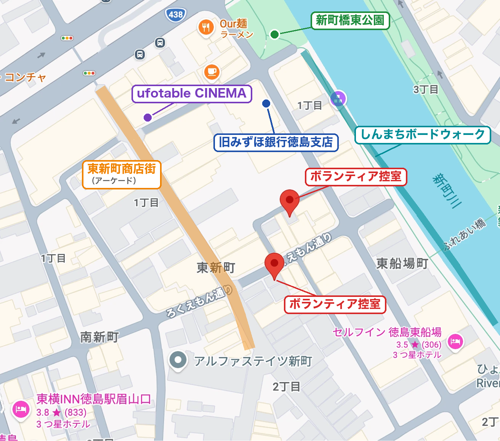

🗺️ 東新町周辺MAP（控え室・旧みずほ）

ℹ️ パラソル配置・商店街の出店MAPは確定後に追加します。現地掲示・リーダーの案内を優先してください。
📍 エリア別 両日（17日・18日）企画
🌳 藍場浜公園（ブース）▼
- POP MUSIC STAGE presented by MOGRA
- 円谷フィールズホールディングスブース
- アパマンショップ 特別ブース（「LIVE特別席」の問い合わせは本部へ）
- ケロリンファン倶楽部SHOP
見るポイント：ステージ後方・横の通り道で人が止まっていないか／終演後の退場と次の待機列がぶつかっていないか。日差しを遮るものが少ない
🏬 ポッポ街商店街▼
- S🔴 アズレンスペシャルブース（18日のみ特装版販売＋ホリ先生サイン会の整理券を先着配布。サイン会は東新町16:00で会場が別。17日は販売なし）
- S🔴 BanG Dream! STORE出張所＆ギャラリー（お渡し会・サイン会の条件は未公表）
- A🟠 試遊：Fate/EXTRA Record／MELTY BLOOD: TWI-LUMINA／鬼滅の刃 ヒノカミ血風譚2 Switch 2版／ビルディバイド -ブライト-（過去は最長2時間待ち）
- feel.公式【展示＆物販ブース】
- きゃべつそふと＆まどそふと
- ゆずソフトショップ
- 四国めたんの中の人 田中小雪とVtuberごっこ
- エンターグラム新作タイトルプロモーション
- リセ・オーバーチュアTCG 徳島大会・展示・無料ガチャ
- METEORA GRAVITY 物販・展示・サイン会
- アニメ×ゲームジャム ミニ
- アウリンブース
- 大喜利対決トゥナイト大秘宝展
- パルワールド OCG＆ヴァイスシュヴァルツ 出張講習会
- 2階：コスプレ受付・更衣室・クローク（コミエス）
通路が狭く列が混在しやすい。18日朝は開店前行列に注意
🏪 東新町商店街▼
- S🔴 KADOKAWA GOODS SHOP（17日10〜17時、18日10〜16時）
- A🟠 サイン会会場（18日）：14:00〜 小村将さん（運命の巻戻士 クロノ役）／16:00〜 ホリ先生（整理券はポッポ街のアズレンブース）
- 『すだちの魔王城』すだち屋 出張営業
- グッドスマイルカンパニーブース
- マチ★アソビ ショッピングストリート
今回特に注意が必要なエリア。店舗入口をふさがない・通路幅の確保を最優先。18日14:00〜17:00は通行が詰まりやすい
🎬 ufotable CINEMA▼
無料イベントでもワンデイパス（500円／1日1人1枚・複数購入分の払い戻しなし）が必要。ワンデイパスはufotable CINEMAなどで購入可。有料・無料の区別、整理券はシネマスタッフ・公式サイトへ。
とくしまグルメハントの景品引換場所でもある。
とくしまグルメハントの景品引換場所でもある。
🏢 アミコ（2F・4F・5F・ドーム）▼
5F
- S🔴 鬼滅 竈門炭治郎＆煉獄杏寿郎 リアルWEBSHOPくじ（購入方式未告知）
- A🟠 鬼滅コラボカフェ「結んだ縁」番外編（予約方式未告知）
- A🟠 本庄雷太FGO展／岡崎武士TYPE-MOON展（サイン会あり）
- 銀河特急ミルキー☆サブウェイ 資料展示＆フォトスポット
- インディゲーム『ルナパルス』体験版試遊会
- トムス・エンタテインメントブース
- A🟠 サイバーコネクトツー展（30周年、来場特典・物販あり）
- 神風動画 マチアソビショップ
- SPIRAL STAIRS STUDIO／TriFスタジオ ブース
- こしのマンガくらぶ
- THE KLOCKWORX STORE
- オールワークスメイドアニメーション資料展
- TROYCA複製原画展
- VTuberの"推し"を発見せよ！
- TVアニメ「らんま1/2」特別展示室
- VTuber事務所「すぺしゃりて」イベント＆展示ブース
- 最先端!! XRひろば
5Fは同じ階に鬼滅カフェ・くじ・FGO/TYPE-MOON展が集中し、エスカレーター・エレベーターが詰まりやすい。ビル内に列を作るスペースがない
🌊 水際公園▼
- S🔴 「アズールレーン」アニメイトカフェ出張版（キッチンカー・席なし）
- マチ★アソビ サウナ -新町川-（9時スタート／2時間制・最終入場18時／有料・事前申込）
コスプレエリアの場所表記が食い違い（チラシ：旧みずほ銀行／コミエスサイト：水際公園）。聞かれたらコミエス公式案内を確認してもらう
⛰️ 眉山・阿波おどり会館【NEW】▼
- S🔴 眉山ロープウェイ「鬼滅の刃」ガイドアナウンス（乗り場は阿波おどり会館。輸送力に上限あり）
- マチ★アソビ ビザン BASE CAMP（新企画）
- マチ★アソビ サウナ -眉山-（山頂でも実施）
- 17日：阿波おどり会館で「CRAYON SHINCHAN JAPAN CRAFTS」報告会・日本酒試飲会
ロープウェイの延長運転・雨天時の対応は未定 → 推測で案内しない
🏛️ 旧みずほ銀行徳島支店【NEW】▼
- 約100年の歴史ある建物でのコスプレエリア
- 映画「魔法使いの夜」×ソニーの「魔法陣」お披露目
🚗 交通公園・その他▼
- 交通公園：マチ★アソビ 痛車グランプリ／ごみ集積所（コンテナあり）
- 徳島阿波おどり空港：アニメジャック！
- 回遊企画：TYPE-MOON4作品連続ステージ 連動スタンプラリー／デジタル壁紙ラリー／商店街アニメジャック！／とくしまグルメハント